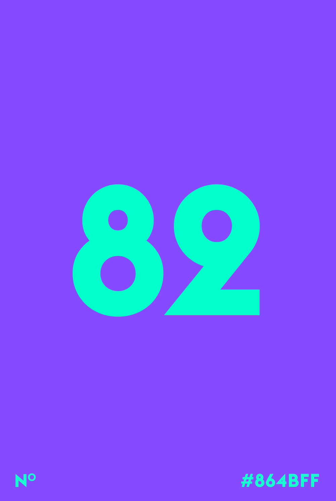

Color Claim – Framework
Ghost 0.11.8 is available! Hot Damn. Click here to upgrade.
theLOG
nevethlexfiend@gmail.com
Search
New Post
Content
Team
SETTINGS
General
Navigation
Tags
Code Injection
Apps
Labs
VIEW BLOG
Content
NEW POST
Color Claim – Framework
nevethlexfiend@gmail.comnevethlexfiend@gmail.com Draft
Ghost 👻
nevethlexfiend@gmail.comnevethlexfiend@gmail.com Published a month ago
nav.Scroll to disappear – appear
nevethlexfiend@gmail.comnevethlexfiend@gmail.com Published a month ago
2nd Post
nevethlexfiend@gmail.comnevethlexfiend@gmail.com Published 2 months ago
2nd Post
Creating Your Own Theme
Once you've got your development environment setup and running in development mode, it's time to decide whether you want to create a brand new theme from scratch, or whether you want to use another theme, such as Casper as a base. You may prefer to code up your new design in to HTML & CSS first, and then convert this into a working theme.
Whichever method you choose, you need to make sure you have a folder in your /content/themes/ directory with an appropriate name, ready to contain your theme files. At the bare minimum, the directory should contain an index.hbs file, a post.hbs file and a package.json file, which contains the name and version number of your theme. See the section on structure for further details of the recommended and required parts of a theme's structure.
Once you've got your theme directory in place, you'll need to restart Ghost. Ghost won't detect new files automatically, but it will pick up changes to those files once it knows about them (providing you're in development mode). Navigate to /ghost/settings/, select your new theme from the dropdown and save the new settings to activate your theme.
You're now ready to start making changes. Remember to restart Ghost if you add a new .hbs file. Apart from this, you'll only need to refresh the page to see your changes.
Outputting posts
Your theme must have at least an index.hbs and a post.hbs template. index.hbs is for outputting the main post list, and post.hbs is for outputting each individual post. You can add more template files to provide more structure and styling to various parts of your blog, or alternatively Ghost will always use index.hbs for lists and post.hbs for single posts.
For full details of how to output your posts, see the post documentation.
Post lists
index.hbs gets access to a set of posts which can be output using the foreach helper, E.g.
{{#foreach posts}} // here we are in the post scope // whatever you put here gets run for each post {{/foreach}} The {{#foreach}} helper has various options to help you output your posts, and for details of what can be output inside the foreach loop, see the post documentation.
When outputting a list of posts, you'll likely also need to use the {{pagination}} helper so that you can navigate between pages of posts